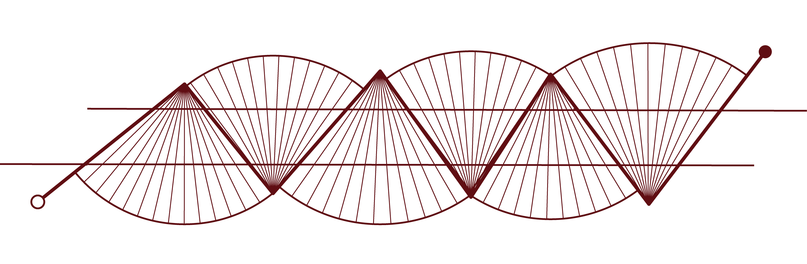

Urban Design · 2023
Redefining the Image of City : Urban and River
01 · Site
In the past, Nanzai Gou served as a cargo transportation waterway, while the establishment of the Lin Family Garden laid the foundation for the development of Banqiao and Fuzhou. However, with sediment accumulation and upstream river diversion, the once expansive river channel has deteriorated into an urban drainage ditch, leading to the gradual disappearance of water-related activities.
02 · Turning Points
I aim to view contemporary urban development from a new perspective, redefining the relationship between cities and rivers through the establishment of four turning points. These human-scaled urban exploration routes connect existing activities within the site, revealing the land’s textures and enhancing the city’s identity.
03 · Design
Confronting the four historical boundaries between the city and water, I have created four designs that span across them, each serving as a turning point to reconnect the city's and water's shared memories. This pathway also links various activities within the current site, transforming the area from an urban periphery into a place that gathers people, fosters activity, and reveals the textures of the land.
04 · Outcome
The 'Place Where Water Leaves' is no longer a marginal urban space with nowhere to settle. Instead, it becomes a place where, even after the waters recede, people continue to gather, activities unfold, and the hidden textures of the land are revealed.